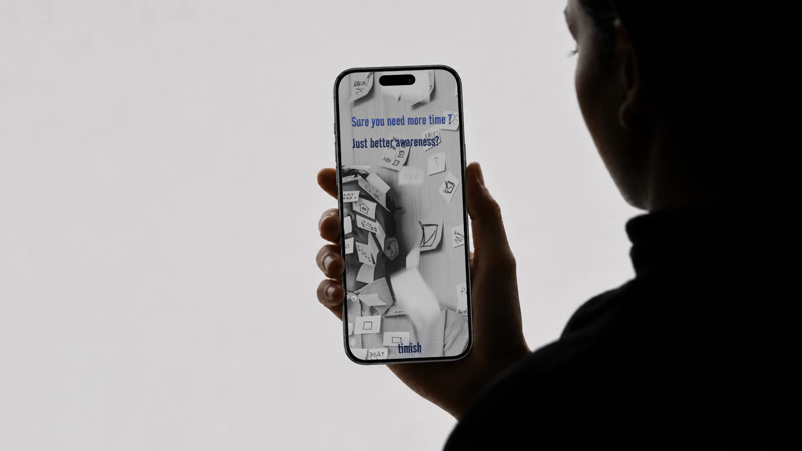

A little less clock-watching. A little more awareness.
Make the passing of time visible, one bar at a time.
A time-management application designed to build time awareness, reduce overwhelm, and help people manage tasks visually.

ProductTimish · Time awareness
PlatformMobile app concept
Design journeyWireframes → two iterations → final prototype
01 / Challenge & solution
What if time felt a little less abstract?
The challenge
Losing track of time and forgetting deadlines can make it difficult to plan ahead, pace tasks, and stay aware of upcoming commitments. The result is missed deadlines and last-minute pressure.
For the people Timish is designed for, text-heavy interfaces and complex options can add to that pressure. The design challenge is to make time easier to understand with less effort.
The concept
Select a time range, represent it as a series of bars, and give a task a simple duration. As a session progresses, the filled portion makes elapsed time visible.
The final screens bring this idea into a focused journey: choose, start, follow progress, and reflect.
How might we help people stay aware of time while keeping their attention on what they want to do?
02 / Research
Understand the struggle before adding another tool.
I explored existing writing on time-management struggles, time-related challenges in ADHD and learning disabilities, and practical planning strategies. This secondary research helped frame Timish around awareness, visual structure, and a simpler planning experience.
Who I designed for
Students, adults with ADHD or learning disabilities, and people who experience difficulties with planning, attention, or task initiation across different ages and occupations.
The themes in my research notes
Anxiety, distractions, disorganization, poor time awareness, planning difficulties, overwhelm, and digital overload.
A design opportunity
Approach time-management difficulties with empathy. Explore visual structure and predictable interactions that reduce the effort of planning, instead of relying on motivation alone.
Time-management struggles have cognitive + neurobiological roots, not laziness.
Students who struggle with time management often become adults with similar challenges.
The deeper problem is Executive Function Weakness, not age or occupation.
Users require visual structure, reduced cognitive load, and simplified tools.
03 / Personas & pain points
Different days. A shared need for clarity.
These design personas translate the project’s research themes into three planning contexts.
S
Saara
20 · Student
Forgets deadlines, finds text-heavy apps overwhelming, and struggles to begin tasks.
Needs
Visual planning, advance reminders, simple timelines, and an easy way to get started.
Point of view
A visual learner needs a simple way to manage study time because text-heavy tools overwhelm her.
How might we…
Make starting a task easier and use visuals to reduce overwhelm?
A
Arjun
30 · Corporate professional
Misses routine tasks, loses track of time, and finds it difficult to organize a consistent workload.
Needs
Routine structure, balanced workloads, and simple reminders.
Point of view
A professional needs structured flexibility to support days when consistency fluctuates.
How might we…
Reduce the effort of managing routine tasks and support consistency?
R
Riya
40 · Business owner
Handles many responsibilities alone. Multitasking and changing energy levels make the day feel overwhelming.
Needs
Prioritization, daily clarity, and an easy planning structure.
Point of view
A business owner needs a unified daily planner to make juggling multiple roles more manageable.
How might we…
Simplify planning and support progress on lower-energy days?
04 / Competitive exploration
Support focus without adding more to manage.
My project analysis considered how existing approaches balance focus, planning, and simplicity. The observations below capture that design exploration.
Reference
What stood out in my review
Opportunity for Timish
Tiimo
AI planning and focus tools; the range of options felt extensive.
Keep the core path small and clear.
One Thing
A simple to-do and focus approach, with some interaction complexity.
Make the next action easy to understand.
Forest
A simple focus experience with rewards.
Connect focus with task planning.
Interval Timer
Structured work–rest cycles.
Show activities within a wider timeline.
Pomodoro Focus
A simple interface centered on one method.
Offer different task durations.
Keep time visible.
A persistent progress indicator can make elapsed time easier to notice.
Reduce the setup.
Minimize text, steps, and settings in the primary flow.
Build structure.
Use predictable visual cues and notifications to support awareness beyond motivation.
The visual bar is the thread connecting the early explorations to the final prototype. The interface develops around three ideas: make time visible, make task duration concrete, and keep the next action clear.
01
See the passage.
Use a filled bar to distinguish elapsed time from the time remaining in a session.
02
Give tasks a size.
Connect S, M, L, and XL to 15, 30, 45, and 60 minutes so a task has a visible time commitment.
03
Keep moving.
A clear primary action guides the journey from selecting a range to starting a task.
S · 15 minutes
M · 30 minutes
L · 45 minutes
XL · 60 minutes
Duration mapping shown in the final task-creation screen.
06 / Wireframes
Start with the structure.
The early wireframes explore how time bars, task entry, progress, music, and settings could fit together. Simple blocks keep attention on the arrangement of information and actions.
The next exploration introduces a navy background, slimmer bars, and blue progress indicators. Task entry, music, and settings remain part of this stage.
The final screen set concentrates on time selection, task duration, active progress, and a daily focus summary. Music and settings appear in the earlier explorations only.
08 / Design · Time Bar System
See where your time goes.
The final overview uses time labels in 15-minute increments, pale gray timeline bars, and blue fill on the highlighted 01:00 row. The task screen shows a separate green progress bar from 01:00 to 01:15.
01 · Timeline track
Pale gray tracks provide the backdrop for the colored progress shown in the overview.
02 · Overview progress
The overview shows blue fill on the highlighted time row and in the progress indicator at the top.
03 · Active task
The 15-minute task example uses green. The task-creation key pairs green, yellow, orange, and purple with 15, 30, 45, and 60 minutes.
A quick view of now
A separate progress indicator sits at the top of both progress screens. In the overview, the highlighted 01:00 row appears directly above Add Task. In the active-task view, a single bar sits between the start and end time labels.
Color with context
The task-creation screen pairs each color with a duration and an S, M, L, or XL option. The overview and active-task screen also show time labels beside the progress tracks.
Time becomes a visible flow of energy and attention.
The diagrams above summarize the visible progress treatments in the final screens.
09 / Final prototype
One bar at a time. One clearer experience.
After multiple iterations, adding and removing features, I arrived at this design. The final prototype centers on visual time bars, simple task durations, and clear progress feedback, bringing the core time-awareness experience into focus.
Choose start & end→Start focus→Add Task→Follow progress→Review focus time
01 / THE EXPERIENCE
An invitation to notice time.
The landing screen introduces the idea of better awareness. A short introduction then frames the core interaction: select a time range and track it one bar at a time.
The “Select time zone” screen presents START and END time pickers with AM/PM choices and a “Start focus” button. The overview shows a top progress indicator, time-labeled bars, and an “Add Task” button below the highlighted row.
The “Add Your Task” screen includes a Task Name field and S, M, L, and XL choices. The color key maps green to 15 minutes, yellow to 30 minutes, orange to 45 minutes, and purple to one hour. A “Complete” button appears at the bottom.
The next screen shows a “Work” task with an “S · Small” label, an “Add More” control, and a “Complete” button.
The active-task screen places the start and end times beside a single progress bar. A short message explains that the app will notify the viewer when the bar finishes.
A dark sky background sits behind the green progress indicators. Back, square-in-circle, and home icons are visible around the session content.
The “Focus Time Today” summary presents a minute total, a horizontal progress bar, and a home icon. The supplied examples show 30m in blue and 10m in green, alongside the message “You can’t control time, but you can choose how to use it.”
The 30-minute and 10-minute values are prototype examples.
The clearest direction came from narrowing the focus.
The progression from wireframes to the final prototype shows a more consistent visual language: slim progress bars, a navy foundation, and blue primary actions. Time selection and task progress become the center of the experience.
Questions for the next usability study
Do people understand the bars without explanation? Can they connect task sizes to durations? Does the label “time zone” clearly communicate a start-and-end time range? These questions would guide the next round of refinement.
How I would evaluate success
These are proposed measures for a future study, rather than reported outcomes.
Goal
What to measure
Fewer missed tasks
Compare missed planned tasks over comparable periods before and during use.
Better task completion
Compare completed tasks as a proportion of planned tasks.
More accurate time awareness
Compare estimates of elapsed time with the actual elapsed time.
Less effort to plan
Count the steps required to create a session and add a task.